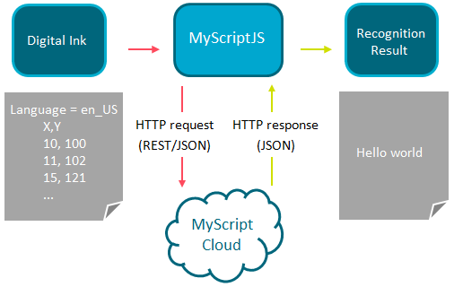

MyScriptJS is a free set of Javascript libraries, used to provide an easy and quick implementation of online handwriting recognition. It works directly with MyScript Cloud, but its role is to simplify its access. Where MyScript Cloud needs a *.json request to be manually created from A to Z, MyScriptJS only needs a valid application key, ink coordinates (XY) and possibly their corresponding timestamp (T).
MyScriptJS is available for free on GitHub and includes API reference and a Getting Started Guide. To learn more about MyScript Cloud, see the corresponding documentation.
See below a brief overview of the MyScript recognition process:

To make requests using MyScriptJS, you need: